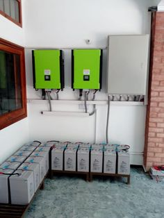
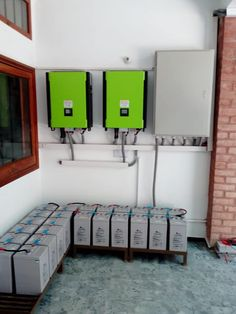

Show more / less
She said, “The country has solar radiation of 3.5 to 7.0 kWh/m2 per day and 427,000MW can be generated in
Nigeria from solar alone.” According to the Nigerian Meteorological Agency, Nigeria experiences an average of
6.25 hours of sunshine daily, suggesting abundant opportunities for harnessing solar energy.She said, “The
country has solar radiation of 3.5 to 7.0 kWh/m2 per day and 427,000MW can be generated in Nigeria from solar
alone.” According to the Nigerian Meteorological Agency, Nigeria experiences an average of 6.25 hours of
sunshine daily, suggesting abundant opportunities for harnessing solar energy.She said, “The country has solar
radiation of 3.5 to 7.0 kWh/m2 per day and 427,000MW can be generated in Nigeria from solar alone.” According to
the Nigerian Meteorological Agency, Nigeria experiences an average of 6.25 hours of sunshine daily, suggesting
abundant opportunities for harnessing solar energy.She said, “The country has solar radiation of 3.5 to 7.0
kWh/m2 per day and 427,000MW can be generated in Nigeria from solar alone.” According to the Nigerian
Meteorological Agency, Nigeria experiences an average of 6.25 hours of sunshine daily, suggesting abundant
opportunities for harnessing solar energy.She said, “The country has solar radiation of 3.5 to 7.0 kWh/m2 per
day and 427,000MW can be generated in Nigeria from solar alone.” According to the Nigerian Meteorological
Agency, Nigeria experiences an average of 6.25 hours of sunshine daily, suggesting abundant opportunities for
harnessing solar energy.
(Sources: Punch Newspaper)
 
